소음진동기사(구) (2004-03-07 기출문제)
1과목: 소음진동개론
1. 음파의 회절에 관한 설명으로 옳은 것은?
- 높은 주파수쪽은 회절작용이 크므로 장해물이 있어도 높은 음은 잘 들린다.
- 음파의 회절은 음파가 한 매질에서 타 매질로 통과할 때 발생된다.
- 일반적으로 파장이 길수록 또한 장애물이 작을수록 회절이 잘된다.
- 기온의 역전층 중에서는 회절에 의해 파면이 아랫 방향으로 꺾이므로 먼 거리에서도 잘 들린다.
(정답률: 알수없음)

2. 소음을 이해하기 위한 역학적 관계 설명으로 알맞지 않은 것은?
- Newton의 제2법칙으로 부터 어떤 물체의 질량에 가속도가 작용하면 힘(force:F)이 발생한다. (힘 = 물체질량 × 가속도)
- 어떤 물체가 힘(F)에 의해 거리(L)만큼 이동하면 그 물체는 일을 받아 에너지를 갖게 된다. (에너지 = 힘 × 이동거리)
- 행하여진 일에 대한 시간율은 파워라 한다. (파워 = 에너지 × 시간)
- 일과 에너지는 가역적이다.
(정답률: 알수없음)
3. 음파가 방음벽에 수직입사할 때 반사율 α 가 0.99876이다. 벽체의 투과손실은? (단, 벽체에 의한 흡음은 무시한다.)
- 24dB
- 29dB
- 34dB
- 38dB
(정답률: 알수없음)
4. 중심주파수가 500Hz일 때 1/1 옥타브밴드분석기(정비형필터)의 상단주파수는?
- 약 710Hz
- 약 760Hz
- 약 810Hz
- 약 860Hz
(정답률: 알수없음)
5. 음파의 종류에 관한 설명(정의)으로 알맞지 않은 것은?
- 정재파:음파의 진행방향으로 에너지를 전송하는 파, 즉 음의 세기가 음원으로 부터의 거리에 따라 감소하는 파
- 평면파:음파의 파면들이 서로 평행한 파, 예를 들면긴 실린더의 피스톤 운동에 의해 발생하는 파
- 구면파:음원에서 모든 방향으로 동일한 에너지를 방출할 때 발생하는 파, 예를 들면 공중에 있는 점음원
- 발산파:음원으로 부터 거리가 멀어질수록 더욱 넓은 면적으로 퍼져가는 파
(정답률: 알수없음)
6. 다음 설명 중 알맞지 않은 것은?
- 파장:정현파의 파동에서 위상의 차이가 360°가 되는 거리를 말하며 그 표시기호는 λ, 단위는 m 이다.
- 주파수:1초동안의 cycle수를 말한다. (f=C/λ [Hz])
- 변위:진동하는 입자(공기)의 어떤 순간에서의 위치와 그것의 평균위치와의 거리. 표시기호는 D, 단위는 m이다.
- 입자속도:시간에 대한 입자변위의 적분값으로 표시 기호는 V, 단위는 m/sec이다.
(정답률: 알수없음)
7. 어떤점의 음의 세기 I는 음압 P와 고유음향 임피던스 ρ · C와의 관계로 맞는 것은? (단, ρ :매질의 밀도, C: 음속 )
- I = P/ρ c
- I2 = P/ρ c
- P = ρ c/I
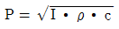
(정답률: 알수없음)
8. 음향출력 10W인 점음원이 지면에 있을 때 10m 떨어진 지점에서의 음의 세기는?
- 0.032 W/m2
- 0.016 W/m2
- 0.008 W/m2
- 0.004 W/m2
(정답률: 알수없음)
9. 자유공간에서 출력 1W의 작은 점음원(무지향성)으로부터 10m 떨어진 지점의 음압레벨은?
- 59 dB
- 69 dB
- 79 dB
- 89 dB
(정답률: 알수없음)
10. 평균 음압이 3,500 N/m2 이고 특정지향 음압이 5,500 N/m2 일 때 지향지수는?
- 2 dB
- 4 dB
- 6 dB
- 9 dB
(정답률: 알수없음)
11. 귀의 각 기관과 그의 기능을 잘못 짝지은 것은?
- 고막 ↔ 진동판
- 외이도 ↔ 공명기
- 이관 ↔ 기압조정
- 와우각 ↔ 음압증폭
(정답률: 알수없음)
12. 항공기 소음을 소음계의 D특성으로 측정한 값이 98dB(D)였다. 감각소음도(Perceived Noise Level)는 대략 몇 PN dB 인가?
- 98
- 100
- 103
- 1⑤
(정답률: 알수없음)
13. 30phon에서 60phon으로 음의 크기레벨이 변하면 sone 은 몇 배가 되는가?
- 2배
- 4배
- 6배
- 8배
(정답률: 알수없음)
14. 개구부에서 고속으로 분출되는 기류음 중 저주파 성분이 많은 영역은? (단, 개구부직경 d, 개구부부터 거리 r)
- d ＜ r ＜ 2d
- 2d ＜ r ＜ 5d
- 5d ＜ r ＜ 10d
- 10d ＜ r ＜ 25d
(정답률: 알수없음)
15. 인간에 있어서 수평방향의 진동가속도를 가장 민감하게 느낄 수 있는 주파수는?
- 1∼2 Hz
- 2∼4 Hz
- 4∼8 Hz
- 8∼16 Hz
(정답률: 알수없음)
16. 실내에서 잔향시간을 측정하고자 할때 몇 dB감쇠하는 것을 관찰하여야 하는가?
- 40 dB
- 60 dB
- 80 dB
- 100 dB
(정답률: 알수없음)
17. 다음 중 '소밀파'에 가장 가까운 것은?
- 물결파
- 전자기파
- 음파
- 지진파의 S파
(정답률: 알수없음)
18. 다음의 용어에 관한 것 중 옳지 않은 것은?
- NNI: 항공기 소음의 척도
- NRN: 감각보정지수
- TNI: 교통소음의 척도
- SIL: 회화방해레벨
(정답률: 알수없음)
19. 다음의 괄호속에 들어갈 말은?
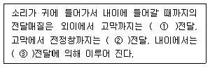
- 기체 - 액체 - 고체
- 기체 - 고체 - 액체
- 기체 - 액체 - 액체
- 기체 - 고체 - 고체
(정답률: 알수없음)
20. D특성청감보정곡선에 대한 기술로 옳지 않은 것은?
- A특성청감보정곡선처럼 저주파 에너지를 많이 소거시키지 않았다.
- 15000Hz 이상의 고주파 음에너지를 보충시킨 것이다.
- A특성청감보정곡선으로 측정한 레벨 보다 항상 크다.
- 항공기소음에 대하여 주로 적용하는 청감응답이다.
(정답률: 알수없음)
2과목: 소음방지기술
21. 다음 중 재료의 흡음율 측정하는 방법 중 난입사 흡음율 측정법으로 실제 현장에서 적용되고 있는 것은?
- 투과손실법
- 정재파법
- 관내법
- 잔향실법
(정답률: 알수없음)
22. 소음기에 관한 설명 중 부적당한 것은?
- 소음기의 설계는 감음량을 고려할 뿐만 아니라 기계의 성능,압력손실 등에 대해서도 신중히 검토해야 한다.
- 단순팽창형 소음기의 감쇠량이 최대로 되는 주파수는 주로 팽창부의 길이 L로 결정하고 f Hz 성분을 가장 유효하게 감쇠시킬수 있는 길이는
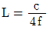
로 하면좋다. - 간섭형 소음기는 음파의 간섭을 이용한 것으로 통로를 2개로 나누고 한쪽의 통로(L1)을 다른 쪽의 통로(L2)보다 파장의 1/4만큼 길게 하여 다시 통로를 하나로 합친 것이다.
- 직관흡음 닥트의 감쇠량(R)dB 닥트의 길이 L과 내장재의 흡음율 α 에 따라
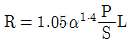
로구해진다. (단, S는 닥트내부단면적(m2), P는 닥트내부주장(周長)(m))
(정답률: 알수없음)
23. 산업기계에서 발생하는 유체역학적 원인인 기류음의 방지 대책과 가장 거리가 먼 것은?
- 분출유속의 저감
- 관의 곡률완화
- 방사면의 축소
- 밸브의 다단화
(정답률: 알수없음)
24. 콘크리트와 유리창 그리고 합판으로 구성된 건물의 벽이 있다. 이 벽의 총합투과손실은? (단, - 콘크리트의 면적 30m2, TL = 45 dB,- 유리창의 면적 15m2, TL = 15 dB, - 합판의 면적 10m2, TL = 12 dB)
- 15 dB
- 17 dB
- 20 dB
- 24 dB
(정답률: 알수없음)
25. 소음제어를 위한 자재류의 관한 설명으로 가장 거리가 먼 것은?
- 흡음재:잔향음의 에너지 저감에 사용된다.
- 차음재:음에너지를 열에너지로 변환시킨다.
- 제진재:상대적으로 큰 내부손실을 가진 신축성이 있는 점탄성 자재이다.
- 차진제:구조적 진동과 진동전달력을 저감시킨다.
(정답률: 알수없음)
26. 방음벽 설계시 유의할 점으로 알맞지 않는 것은?
- 음원의 지향성이 수음측 방향으로 클 때에는 벽에 의한 감쇠치가 계산치보다 크게 된다.
- 벽의 투과손실은 회절감쇠치보다 적어도 3dB 이상 크게 하는 것이 좋다.
- 벽의 길이는 점음원일 때 벽 높이의 5배 이상으로 하는 것이 바람직 하다.
- 벽의 길이는 선음원일 때 음원과 수음점 간의 직선 거리의 2배 이상으로 하는 것이 바람직 하다.
(정답률: 알수없음)
27. 일반적으로 소음기의 성능을 나타내는 용어 중 삽입손실치에 대한 정의로 알맞는 것은?
- 소음기가 있는 그 상태에서 소음기의 입구 및 출구에서 측정된 음압레벨의 차
- 소음기 내의 두 지점 사이에서 측정한 음향파워의 손실치
- 소음원에 소음기를 부착하기 전과 후의 공간상의 어떤 특정위치에서 측정한 음압레벨의 차와 그 측정 위치
- 소음기를 투과한 음향출력에 대한 소음기에 입사된 음향출력의 비(입사된 음향출력/투과된 음향출력)
(정답률: 알수없음)
28. 실정수 200m2 공장실내의 세면이 만나는 코너에 음향파워레벨 80dB의 소형기계가 설치되어 있다. 이 기계로 부터 4m 떨어진 한 점의 음압도(dB)는? (단, 반확산음장 기준)
- 62
- 68
- 73
- 79
(정답률: 알수없음)
29. 팽창형 소음기의 입구 및 팽창부의 직경이 각각 50cm, 120cm일 경우, 기대할 수 있는 최대 투과손실(dB)은?
- 약 4.6
- 약 9.6
- 약 14.6
- 약 19.6
(정답률: 알수없음)
30. 공장의 환기 덕트(환기덕트의 소음대책)에서 나가는 출구가 민가 있는쪽으로 향해 있어서 문제가 되고 있다. 그 대책으로 열거한 다음 각항에서 맞지 않는 것은?
- 덕트출구의 방향을 바꾼다.
- 덕트출구에 사이렌서를 부착한다.
- 덕트출구 앞에 흡음덕트를 부착한다.
- 덕트출구의 면적을 작게 한다.
(정답률: 알수없음)
31. 어느 전자공장내 소음대책으로 다공질재료로 흡음매트 공법을 벽체와 천정부에 각각 적용하였다. 작업장 규격은 25L×12W×5H(m)이고, 대책전 바닥, 벽체 및 천정부의 평균 흡음율은 각각 0.02, 0.⑤와 0.1 이었다면 잔향시간비 (대책전/대책후)는? (단, 흡음매트의 평균 흡음율은 0.45로 한다)
- 약 2.9
- 약 4.3
- 약 5.6
- 약 6.2
(정답률: 알수없음)
32. 기체 흐름에서 와류에 의해 발생하는 기류음을 난류음이라 한다. 난류음의 발생과 가장 거리가 먼 것은?
- 밸브
- 빠른 유속
- 관의 굴곡부
- 엔진
(정답률: 알수없음)
33. 다음 문장은 작업장 바닥에 놓인 송풍기 소음대책에 관한 것이다. ( )안에 들어갈 말이 바르게 된 것은?
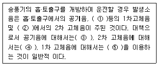
- ① 마루(바닥), ② fan casing, ③ 소음기, ④ 방음 lagging, ⑤ 진동절연구조물
- ① fan casing, ② 마루(바닥), ③ 소음기, ④ 방음 lagging, ⑤ 진동절연구조물
- ① 마루(바닥), ② fan casing, ③ 소음기, ④ 진동절연구조물, ⑤ 방음 lagging
- ① 소음기, ② 마루(바닥), ③ fan casing, ④ 진동절연구조물, ⑤ 방음 lagging
(정답률: 알수없음)
34. 공동공명기형 소음기의 공동내에 흡음재를 충진할 경우에 감음특성으로 가장 적절한 내용은?
- 저주파음 소거의 탁월현상은 완화되지만 고주파까지 거의 평탄한 감음특성을 보인다.
- 저주파음 소거의 탁월현상이 향상되며 고주파까지 효과적인 감음특성을 보인다.
- 고주파음 소거의 탁월현상은 완화되지만 저주파에서는 효과적인 감음특성을 보인다.
- 고주파음 소거의 탁월현상이 향상되며 저주파에서는 일정한 감음특성을 보인다.
(정답률: 알수없음)
35. 공기조화장치의 입구측에 설치된 원심형팬이 2400rpm으로 회전하고 있다. 날개수가 13개라면 날개통과주파수는 몇 Hz 인가?
- 185Hz
- 240Hz
- 380Hz
- 520Hz
(정답률: 알수없음)
36. 공명형 소음기의 공명주파수에 관한 다음 설명중 옳지 않은 것은?
- 공명주파수는 내관의 두께가 증가하면 저하한다.
- 공명주파수는 내관구멍의 면적이 증가하면 저하한다.
- 공명주파수는 내관과 외관사이의 부피가 증가하면 저하한다.
- 공명주파수는 내관을 통하는 기체의 온도가 높아지면 증가한다.
(정답률: 알수없음)
37. 공장내의 평균음압도가 85dB이고 벽외부에서의 평균음압도가 68dB일 때 이 벽의 대략적 투과손실은? (단, 실내외벽 각각의 면으로 부터 1m 정도에서 측정)
- 11dB
- 13dB
- 15dB
- 17dB
(정답률: 알수없음)
38. 선음원은 거리가 2배될 때마다 음압레벨은 몇 dB씩 감소 하는가?
- 2
- 3
- 6
- 9
(정답률: 알수없음)
39. 32dB의 투과손실을 갖는 벽의 투과율은?
- 6.3×10-4
- 6.3×10-5
- 3.4×10-4
- 3.4×10-5
(정답률: 알수없음)
40. 틈새가 있는 0.9m× 2.0m의 문이 있다. 이 문의 투과손실을 20dB이상으로 하고자 한다면 문 주위 틈새의 평균 폭을 몇 mm이하로 해야 되는가? (단, 틈새 이외는 차음성능이 충분히 크다고 가정한다.)
- 5.2mm
- 4.8mm
- 4.2mm
- 3.1mm
(정답률: 알수없음)
3과목: 소음진동 공정시험 기준
41. 소음의 배출허용기준을 소음계만으로 측정할 경우 계기 조정을 위하여 먼저 선정된 측정위치에서 대략적인 소음의 변화양상을 파악한 후, 소음계 지시치의 변화를 목측으로 ( ) 판독, 기록한다. ( )안에 알맞는 내용은?
- 5초 간격 50회
- 5초 간격 30회
- 10초 간격 50회
- 10초 간격 30회
(정답률: 알수없음)
42. 자동차 공장의 소음을 측정하여 다음과 같은 등가소음 기록지의 자료를 얻었다. 등가소음도는 몇 dB(A)인가?
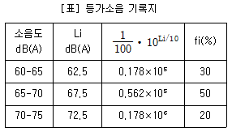
- 66.1
- 68.4
- 70.7
- 72.2
(정답률: 알수없음)
43. 도로교통진동 측정을 위해 디지털 진동자동분석계를 사용하는 경우에 자료분석방법으로 적절한 것은?
- 샘플주기를 1초 이내에서 결정하고 5분이상 측정하여 구간 최대치로 부터 10개를 산술평균한 값을 그 지점의 측정진동레벨로 한다 .
- 샘플주기를 0.1초 이내에서 결정하고 5분이상 측정하여 구간 최대치로 부터 10개를 산술평균한 값을 그 지점의 측정진동레벨로 한다 .
- 샘플주기를 1초 이내에서 결정하고 5분이상 측정하여 자동 연산,기록한 80%범위의 상단치인 L10값을 그 지점의 측정진동레벨로 한다 .
- 샘플주기를 0.1초 이내에서 결정하고 5분이상 측정하여 자동 연산,기록한 80%범위의 상단치인 L10값을 그 지점의 측정진동레벨로 한다.
(정답률: 알수없음)
44. 발파소음도 측정시 대상소음도에 시간대별 평균발파 횟수(N)에 따른 보정량( )을 보정한다. ( )안에 알맞는 내용은? (단, N＞1)
- 20 log N
- 10 log N
- 20 log (N-1)
- 10 log (N-1)
(정답률: 알수없음)
45. 배출허용기준의 측정방법중 측정조건에 있어서 손으로 소음계를 잡고 측정할 경우 소음계는 측정자의 몸으로 부터 몇 m이상 떨어져야 하는가?
- 0.2 이상
- 0.3 이상
- 0.4 이상
- 0.5 이상
(정답률: 알수없음)
46. 소음계의 성능기준으로 틀린 것은?
- 측정가능 주파수 범위는 31.5Hz - 8KHz이상이어야 한다.
- 측정가능 소음도 범위는 35 - 140dB이상이어야 한다.
- 레벨렌지 변환기가 있는 기기에 있어서 레벨렌지 변환기의 전환오차가 0.5dB 이내어어야 한다.
- 지시계기의 눈금오차는 0.5dB 이내어어야 한다.
(정답률: 알수없음)
47. 소음환경기준 측정시 낮시간대에는 각 측정지점에서 몇 시간이상 간격으로 몇회이상 측정하여 산술평균한 값을 측정소음도로 하는가?
- 1, 2
- 1, 4
- 2, 2
- 2, 4
(정답률: 알수없음)
48. 표준음 발생기는 소음계 측정감도를 교정하는 기기이다. 발생음의 오차는 몇 dB 이내이어야 하는가?
- ± 1.0dB
- ± 0.5dB
- ± 0.3dB
- ± 0.1dB
(정답률: 알수없음)
49. 항공기 소음 측정시 측정위치를 정점으로 한 원추형 상부 공간내에는 측정치에 영향을 줄 수 있는 장애물이 있어서는 안되는데 이때 원추형 상부공간이란 측정위치를 지나는 지면 또는 바닥면의 법선에 반각 몇° 의 선분이 지나는 공간을 말하는가?
- 90
- 60
- 80
- 70
(정답률: 알수없음)
50. 소음환경기준의 측정시 자동차전용도로의 경우에 도로변지역의 범위는 도로단으로 부터 몇 m 지점이내 인가?
- 50m
- 100m
- 150m
- 200m
(정답률: 알수없음)
51. 진동측정기의 성능기준으로 알맞는 것은?
- 진동픽업의 종감도는 규정주파수에서 수감축 감도에 대한 차이가 5dB이상 이어야 한다.
- 진동픽업의 종감도는 규정주파수에서 수감축 감도에 대한 차이가 15dB이상 이어야 한다.
- 진동픽업의 횡감도는 규정주파수에서 수감축 감도에 대한 차이가 5dB이상 이어야 한다.
- 진동픽업의 횡감도는 규정주파수에서 수감축 감도에 대한 차이가 15dB이상 이어야 한다.
(정답률: 알수없음)
52. 철도소음 측정시 측정점에 장애물이나 주거,학교,병원 상업 등에 활용되는 건물이 있을 때에는 건축물로 부터 철도방향으로 ( ) 떨어진 지점의 지면위 1.2 - 1.5m를 측정점으로 한다. ( )안에 알맞는 내용은?
- 10m
- 5m
- 3.5m
- 1m
(정답률: 알수없음)
53. 소음계 구성요소중 지시계기에 관한 설명으로 틀린 것은?
- 지시계기는 지침형 또는 디지털형이어야 한다.
- 지침형에서는 유효지시범위가 15dB이상이어야 한다.
- 지침형에서는 소수점 한자리까지 표시되어야 한다.
- 지침형에서는 1dB 눈금간격이 1mm이상으로 표시되어야 한다.
(정답률: 알수없음)
54. 표준음발생기에는 표시되어야 하는 것으로 알맞는 것은?
- 발생음의 주파수와 음압도
- 발생음의 파장과 음의 세기
- 발생음의 진폭과 음향출력
- 발생음의 소음레벨과 음압실효치
(정답률: 알수없음)
55. 도로소음의 측정시간 및 측정지점수로 알맞는 것은?
- 당해지역 도로교통소음을 대표할 수 있는 시각에 2개 이상의 측정지점수를 선정하여 각 측정지점에서 2시간 이상 간격으로 2회 이상 측정하여 산술평균한 값을 측정소음도로 한다.
- 당해지역 도로교통소음을 대표할 수 있는 시각에 2개 이상의 측정지점수를 선정하여 각 측정지점에서 4시간 이상 간격으로 2회 이상 측정하여 산술평균한 값을 측정소음도로 한다.
- 당해지역 도로교통소음을 대표할 수 있는 시각에 2개 이상의 측정지점수를 선정하여 각 측정지점에서 2시간 이상 간격으로 4회 이상 측정하여 산술평균한 값을 측정소음도로 한다.
- 당해지역 도로교통소음을 대표할 수 있는 시각에 2개 이상의 측정지점수를 선정하여 각 측정지점에서 4시간 이상 간격으로 4회 이상 측정하여 산술평균한 값을 측정소음도로 한다.
(정답률: 알수없음)
56. 다음의 진동레벨계의 구조 중 가장 먼저 구성(배치) 되는 것은?
- 동특성조절기
- 감각보정회로
- 증폭기
- 레벨렌지 변환기
(정답률: 알수없음)
57. 환경기준의 소음측정시 소음계의 청감보정 회로와 동특성은 어디에 고정해서 측정하여야 하는가?
- A-slow
- A-fast
- C-slow
- C-fast
(정답률: 알수없음)
58. 일반적으로 항공기 소음 측정시 풍속이 몇 m/sec 이상이 면 방풍망을 부착하여야 하는가?
- 0.5
- 1.0
- 1.5
- 2.0
(정답률: 알수없음)
59. 소음진동공정시험방법에서 사용되는 용어에 대한 정의로 틀린 것은?
- 소음원: 소음을 발생하는 기계, 기구, 시설 및 기타 물체를 말한다.
- 대상소음: 측정소음도에 암소음을 보정한 후 얻어진 소음도를 말한다.
- 지시치: 계기나 기록지 상에서 판독한 소음도로서 실효치를 말한다.
- 측정소음도: 시험방법에서 정한 측정방법으로 측정한 소음도 및 등가소음도 등을 말한다.
(정답률: 알수없음)
60. 진동레벨에 관한 설명 중 틀린 것은?
- 진동레벨의 감각보정회로(수직)를 통하여 측정한 진동가속도 레벨의 지시치를 말한다.
- 단위는 dB(V)로 표시한다.
- 진동가속도 레벨의 정의는
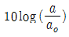
의 수식을 따른다.(a:측정진동가속도 실효치, ao:기준진동 가속도 실효치) - 진동가속도 실효치 단위는 m/sec2이다.
(정답률: 알수없음)
4과목: 진동방지기술
61. 임계감쇠계수 Cc 을 바르게 표시한 것은? (단, 감쇠비=1, 질량 m, 스프링 상수 k, 고유원진동수 ω이다.)
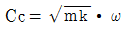
- Cc=2mkω
- Cc=2mω
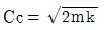
(정답률: 알수없음)
62. 진동가속도의 실효치 진폭이 3× 10-2m/s2일 때, 진동가속도 레벨(VAL)은?
- 55dB
- 60dB
- 65dB
- 70dB
(정답률: 알수없음)
63. 질량(m) 0.25kg인 물체가 스프링에 매달려 있다. 고유진동수와 정적변위량이 바르게 짝지어진 것은? (단, 이 스프링의 스프링정수는 0.1533N/mm이다)
- 4Hz, 16mm
- 8Hz, 16mm
- 16Hz, 14mm
- 32Hz, 14mm
(정답률: 알수없음)
64. 금속스프링의 단점을 보완하기 위한 내용으로 틀린 것은?
- 로킹모션을 억제하기 위해서는 스프링의 정적 수축량이 일정한 것을 쓴다
- 로킹모션을 억제하기 위해서는 기계무게의 1 - 2배의 가대를 부착시킨다
- 낮은 감쇠비로 일어나는 고주파 진동의 전달은 스프링과 직렬로 고무패드를 끼워 차단할 수 있다
- 스프링의 감쇠비가 적을 때는 스프링과 직렬로 댐퍼를 넣어 영율을 낮춘다
(정답률: 알수없음)
65. 기계중량이 50㎏f인 왕복동 압축기가 있다. 600rpm으로 회전하며 상하방향의 불균형력(Fo)이 6㎏f발생되고 있다. 기초는 콘크리트 재질로서 탄성지지 되어 있으며 진동전달력이 2㎏f 이었다면, 계의 고유진동수(Hz)은? (단, 감쇠는 무시한다)
- 3
- 5
- 7
- 9
(정답률: 알수없음)
66. 진동발생원의 가진력은 특성에 따라 기계회전부의 질량 불균형, 기계의 왕복운동, 충격에 의한 가진력등으로 대별되는데 다음 중 그 특성이 다른 것은?
- 단조기
- 전동기
- 송풍기
- 펌프
(정답률: 알수없음)
67. 가진력 저감의 예로 가장 거리가 먼 것은?
- 단조기를 단압프레스로 교체한다.
- 터보용 고속회전압축기에 연편을 부착하여 가진력을 감소시킨다.
- 기계,기초를 움직이는 가진력을 감소시키기 위해 탄성지지한다.
- 크랑크 기구를 가진 왕복동 기계는 복수개의 실린더를 가진 것으로 교체한다.
(정답률: 알수없음)
68. 주기가 2초인 단진자의 실의 길이는?
- 24.8cm
- 49.6cm
- 99.3cm
- 198.6 cm
(정답률: 알수없음)
69. 레이리파에 대한 설명으로 맞는 것은? (단, 진동원으로 부터 떨어진 거리: r)
- 지표면에서는 진폭이 r2 에 반비례하여 감소한다.
- 지표면에서는 진폭이 r 에 반비례하여 감소한다.
- 지표면에서는 진폭이 √r 에 반비례하여 감소한다.
- 지표면에서는 진폭이 r/2에 반비례하여 감소한다.
(정답률: 알수없음)
70. 다음은 공기스프링에 관해 설명한 것이다. 틀린 것은?
- 공기스프링 설계시는 스프링 높이, 내하력, 스프링 정수를 각기 독립적으로 선정할 수 있다.
- 높이 조정밸브를 병용하면 하중의 변화에 따른 스프링 높이를 조절하여 기계의 높이를 일정하게 유지할 수 있다.
- 부하능력이 광범위하며 자동제어가 가능하나 압축기등 부대시설이 필요하다.
- 환경요소에 대한 저항성이 크고 저주파 차진이 좋으며 최대변위가 허용된다.
(정답률: 알수없음)
71. 감쇠자유진동을 하는 진동계에서 감쇠고유진동수가 15Hz, 고유진동수가 20Hz이면 감쇠비는?
- 0.33
- 0.55
- 0.66
- 0.77
(정답률: 알수없음)
72. 큰 가진력을 발생하는 기계의 기초대를 설계할 경우 공진을 피하기 위해서는 기계의 기초대 진폭을 극력 억제해야 한다. 다음 경우 중 가장 알맞는 것은? (단, f: 강제진동수, fn: 고유진동수 )
- f가 fn보다 작은 경우에 기초대의 밑면적을 증가시켜지반과의 스프링 기능을 강화하거나 기초대의 중량을 증가시키는 것이 유효하다.
- f가 fn보다 작은 경우에 기초대의 밑면적을 감소시켜 지반과의 스프링 기능을 강화하거나 기초대의 중량을 증가시키는 것이 유효하다.
- f가 fn보다 작은 경우에 기초대의 밑면적을 증가시켜 지반과의 스프링 기능을 강화하거나 기초대의 중량을 감소시키는 것이 유효하다.
- f가 fn보다 작은 경우에 기초대의 밑면적을 감소시켜 지반과의 스프링 기능을 강화하거나 기초대의 중량을 감소시키는 것이 유효하다.
(정답률: 알수없음)
73. 점성감쇠가 있는 1자유도 자유진동에서 부족감쇠 (under damping)란 감쇠비가 어떤 값을 갖는 경우 인가?
- 1 이다.
- 1 보다 작다.
- 1 보다 크다.
- 0 이다.
(정답률: 알수없음)
74. 스프링 상수 k1=40N/m, k2=60N/m인 두 스프링을 그림과 같이 직렬(直列)로 연결하고 질량 m=6Kg을 매달았을때 연직방향의 고유진동수는?
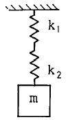
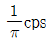
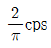
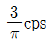
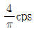
(정답률: 알수없음)
75. 철도진동을 줄이기 위한 노력과 상반된 사항은?
- 짧은 레일
- 레일표면 평활
- 자갈 도상
- 레일 패드
(정답률: 알수없음)
76. 외부에서 가해지는 강제진동수 f 와 계의 고유진동수 fn의 비 및 감쇠비 ξ ,진동전달율 T의 관계로 알맞는 것은?
- f/fn＜√2 인 범위내에서는 ξ 값이 적을수록 전달율 T 가 적어지므로 방진상 감쇠비가 적을수록 좋다.
- f/fn＜√2 인 범위내에서는 ξ 값이 커질수록 전달율 T 가 적어지므로 방진상 감쇠비가 클수록 좋다.
- f/fn＞√2 인 범위내에서는 ξ 값이 적을수록 전달율 T가 커지므로 감쇠비가 적을수록 좋다.
- f/fn＞√2 인 범위내에서는 ξ 값이 커질수록 전달율 T가 커지므로 감쇠비가 클수록 좋다.
(정답률: 알수없음)
77. 제진합금 중 두드려도 소리가 나지 않는 금속으로 유명한 Sonoston에 가장 많이 함유되어 있는 물질은?
- Mn
- Cu
- Al
- Fe
(정답률: 알수없음)
78. 원판 중심에서 1.5m 떨어진 위치에 20kg의 불균형 물체가 놓여 있어 진동이 발생하여 방진하려한다. 원판이 500rpm으로 회전한다면 대응방향(원판 중심으로 부터)50cm 지점에 붙여야 할 추의 무게는?
- 50kg
- 60kg
- 70kg
- 80kg
(정답률: 알수없음)
79. 기계를 기초에 고정하고 운전하였더니 기계의 상면의 높이가 998mm 부터 1002mm 사이를 매분 240회 진동하였다 이 진동의 가속도는?
- 0.63 m/sec2
- 1.26 m/sec2
- 2.52 m/sec2
- 3.78 m/sec2
(정답률: 알수없음)
80. 다음 중 진동방지계획 수립시 일반적으로 가장 먼저 이루어지는 절차는?
- 수진점 일대의 진동 실태조사
- 발생원의 위치와 발생기계를 확인
- 수진점의 진동규제기준 확인
- 저감 목표레벨을 정함
(정답률: 알수없음)
5과목: 소음진동 관계 법규
81. 소음진동방지시설 중 방진시설과 가장 거리가 먼 것은?
- 탄성지지시설 및 제진시설
- 배관진동 절연장치 및 시설
- 방진덮개시설
- 방진구시설
(정답률: 알수없음)
82. 환경관리인을 두어야 할 사업장 및 그 자격기준에 관한 설명으로 틀린 것은?
- 총동력합계는 소음배출시설중 기계, 기구의 마력의 총합계를 말하며 대수기준시설 및 기계,기구와 기타 시설 및 기계,기구는 제외한다.
- 환경관리인 자격기준중 소음,진동기사 2급(산업기사)은 기계분야, 전기분야기사 2급(산업기사)이상의 자격소지자로 2년 이상 동일분야에 종사한 자로 대체할 수 있다.
- 방지시설면제사업장은 대상사업장의 소재지역 및 동력규모에 불구하고 총동력합계 5000마력미만인 사업장의 환경관리인자격기준에 해당하는 환경관리인을 둘 수 있다.
- 환경관리인으로 임명된 자는 당해 사업장에 상시 근무하여야 한다.
(정답률: 알수없음)
83. 환경관리인의 관리사항이 아닌 것은?
- 배출시설 및 방지시설의 관리에 관한 사항
- 배출시설 및 방지시설의 개선에 관한 사항
- 배출시설 및 방지시설의 운영기록부 작성 및 보존에 관한 사항
- 기타 소음· 진동방지를 위하여 시· 도지사가 지시하는 사항
(정답률: 알수없음)
84. 운행차의 소음개선 명령기간은 개선명령일로부터 며칠로 하는가?
- 7일
- 10일
- 14일
- 15일
(정답률: 알수없음)
85. 다음 조건에서의 생활소음규제기준으로 알맞는 것은?
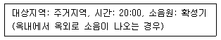
- 65 dB(A) 이하
- 60 dB(A) 이하
- 55 dB(A) 이하
- 50 dB(A) 이하
(정답률: 알수없음)
86. 다음 중 소음 배출시설의 기준으로 적절치 못한 것은?
- 자동제병기
- 50대 이상의 직기
- 10마력 이상의 연탄제조용 윤전기
- 20마력 이상의 콘크리트관 및 파일의 제조기계
(정답률: 알수없음)
87. 소음진동규제법상 환경관리인의 교육기관은? (단, 환경부 장관이 인정하여 지정하는 기관외 )
- 환경공무원 교육원
- 국립환경연구원
- 환경보전협회
- 지방 환경청
(정답률: 알수없음)
88. 환경관리인등의 교육계획에 포함될 사항과 거리가 먼 것은?
- 교육의 기본방향
- 교재편찬계획
- 교육훈련 성취도 평가계획
- 교육대상자 선발기준 및 선발계획
(정답률: 알수없음)
89. 소음∙진동배출시설이 아닌 물체로 부터 발생하는 진동을 제거하거나 감소시키는 시설로서 환경부령으로 정하는 것으로 정의되는 것은?
- 진동시설
- 방진시설
- 진동방지시설
- 진동방진시설
(정답률: 알수없음)
90. 1999년 12월 31일까지 제작된 자동차를 기준으로 자동차의 종류에 해당되지 않는 것은?
- 화물자동차
- 승용자동차
- 중량자동차
- 이륜자동차
(정답률: 알수없음)
91. 사업자가 배출시설 또는 방지시설의 설치 또는 변경을 완료한 후 하여야 하는 가동개시신고를 하지 않고 조업을 한 경우의 2차 행정처분기준으로 적절한 것은?
- 경고
- 조업정지
- 사용중지
- 폐쇄, 허가취소
(정답률: 알수없음)
92. 인증을 면제할 수 있는 자동차의 경우로 알맞는 것은?
- 외국에서 국내의 공공기관 또는 비영리단체에 무상으로 기증하여 반입하는 자동차
- 항공기 지상조업용으로 반입하는 자동차
- 국제협약등에 의하여 인증을 면제할 수 있는 자동차
- 여행자등이 다시 반출할 것을 조건으로 일시 반입하는 자동차
(정답률: 알수없음)
93. 공장소음 배출허용기준은 다음 중 어떤 소음도로 설정되는가? (단, 보정표로 보정후의 소음도 기준)
- 측정소음도
- 대상소음도
- 보정소음도
- 평가소음도
(정답률: 알수없음)
94. 제작차 소음허용기준에 적합하지 아니하게 자동차를 제작한 자에 대한 벌칙규정 기준은?
- 1년이하의 징역 또는 5백만원이하의 벌금에 처한다.
- 3년이하의 징역 또는 1천 5백만원이하의 벌금에 처한다.
- 5년이하의 징역 또는 3천만원이하의 벌금에 처한다.
- 7년이하의 징역 또는 5천만원이하의 벌금에 처한다.
(정답률: 알수없음)
95. 소음진동배출시설의 설치허가를 받고자 할 때 제출하여야 하는 서류와 가장 거리가 먼 것은?
- 방지시설의 배치도
- 배출시설의 배치도
- 방지시설의 설치내역서
- 배출시설의 설치내역서
(정답률: 알수없음)
96. 50만원 이하의 과태료 부과대상이 아닌 자는?
- 배출허용기준을 준수하지 아니한 자
- 이동소음원의 사용금지를 위반한 자
- 환경관리인등의 교육을 받게하지 아니한 자
- 환경관리인의 업무를 방해한 자
(정답률: 알수없음)
97. 소음,진동검사를 의뢰할 수 있는 검사기관으로 틀린 것은?
- 지방환경청
- 유역환경청
- 환경관리공단
- 환경보전협회
(정답률: 알수없음)
98. 사업자의 환경관리인 개임신고는 개임한 날부터 ( )일 이내에 하여야 한다.( )안에 알맞는 내용은?
- 7
- 10
- 15
- 30
(정답률: 알수없음)
99. 폭약 사용으로 인한 소음, 진동피해를 방지하기 위하여 지방경찰총장에게 폭약사용규제를 요청할 수 있는 자는?
- 유역환경청장
- 시∙도지사
- 환경부장관
- 건설 교통부장관
(정답률: 알수없음)
100. 이동소음의 규제를 위한 이동소음원의 종류로 적합치 않은 것은?
- 이동하며 사용하는 확성기
- 행락객이 사용하는 음향기계
- 음향장치를 부착하여 운행하는 이륜자동차
- 소음방지장치가 비정상적인 이륜자동차
(정답률: 알수없음)